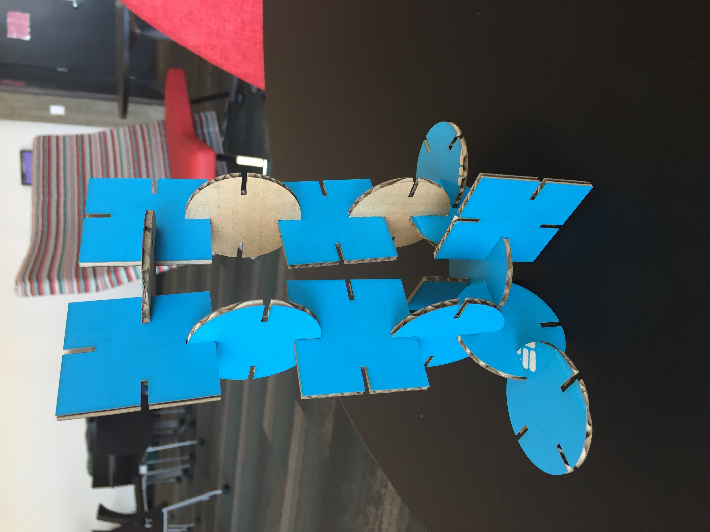
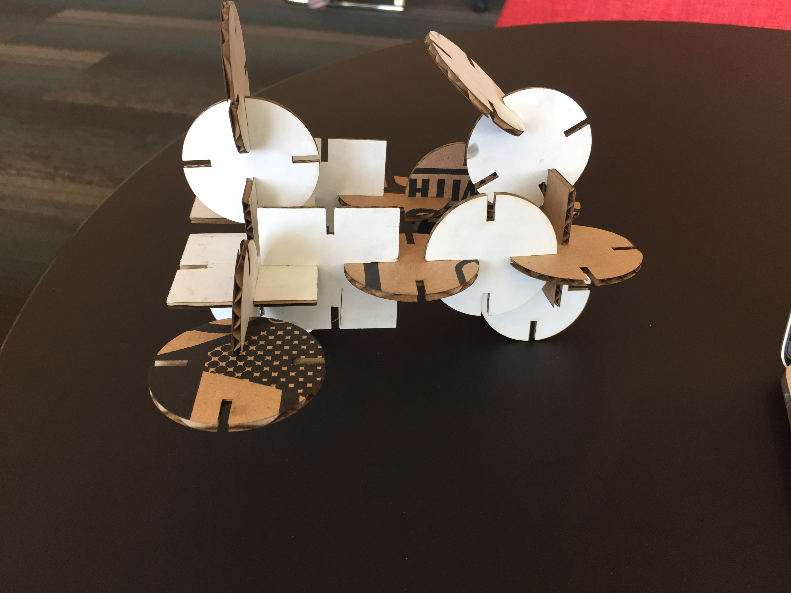
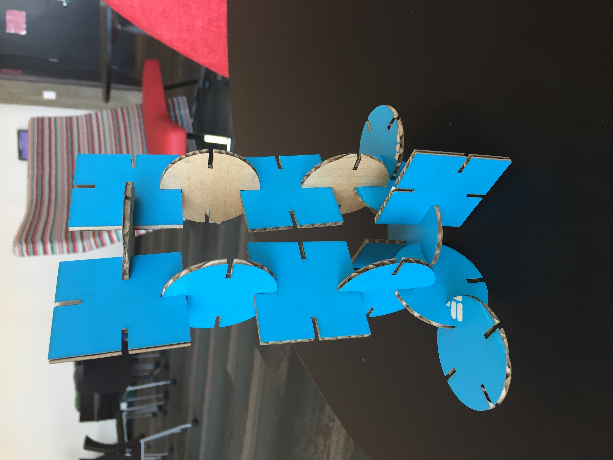
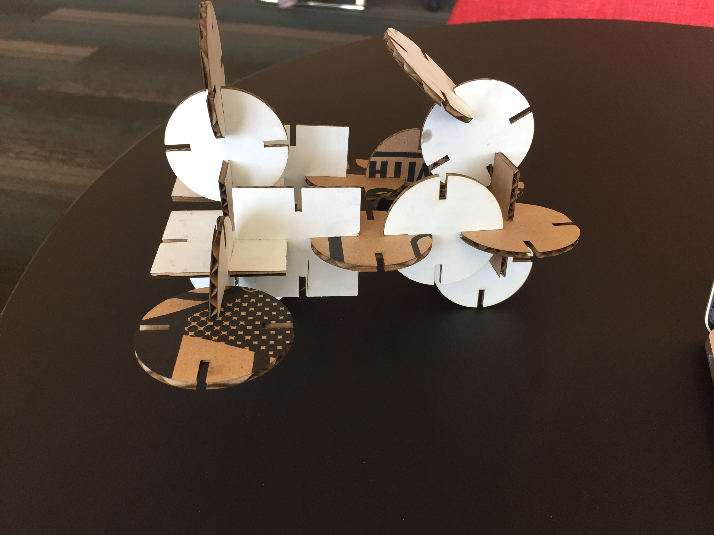

CAD Model using Rhino/Grasshopper and Laser-cut outcome


I started with creating an updated version of my previous design.
I created a round shape first with 12 equidistant notches, saved the rhino file but didn’t realize that I had to save the grasshopper file separately as well. Redid the circle, and found it difficult to make a moon shape in rhino with notches in the position I wanted. I did this for 2 days and then realized it was better to make something new and simple for this assignment as Rhino-Grasshopper has a steep learning curve.
Thanks Nadia for providing the tutorial, it was very helpful!
I created a circle and square shape with 4 notches each.
Thickness of Notches: 2.1mm and 2.5mm
Circle Shape screenshot - Grasshopper
 Square Shape screenshot - Grasshopper
Square Shape screenshot - Grasshopper
 Rhino screenshot before exporting to Illustrator(different notch thickness)
Rhino screenshot before exporting to Illustrator(different notch thickness)

 Laser Cutter Setting at the MILL
Laser Cutter Setting at the MILL

 Laser Cutting in action:
Laser Cutting in action:
Laser cut pieces
 Final Result:


Issues Faced:
1. I added a numeric slider for every notch and changed it manually every time I had to test with a different thickness(not very practical!). Next time would add formulas or use other ways to combine them.
2. I also faced difficulty with the conversion of scales from Rhino to Illustrator but after googling it became clear.
Source Files:
Grasshopper File
Rhino File
Illustrator File1
Illustrator File2
Final Result:


Issues Faced:
1. I added a numeric slider for every notch and changed it manually every time I had to test with a different thickness(not very practical!). Next time would add formulas or use other ways to combine them.
2. I also faced difficulty with the conversion of scales from Rhino to Illustrator but after googling it became clear.
Source Files:
Grasshopper File
Rhino File
Illustrator File1
Illustrator File2